MIT 6.828 Lab1
MIT6.828 Lab1 Part2 pointers
实验中有一部分要求我们复习C语言基础，主要是指针方面的知识：
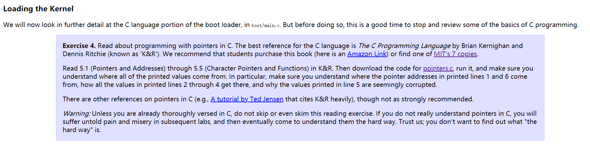
我们需要做的工作就是运行官方所给的pointers.c文件，然后弄明白每次数据a中的元素都是什么1
2
3
4
5
6
7
8
9
10
11
12
13
14
15
16
17
18
19
20
21
22
23
24
25
26
27
28
29
30
31
32
33
34
35
36
37
38
39
40
41
42
43
44
45
46#include <stdio.h>
#include <stdlib.h>
void f(void)
{
int a[4];
int *b = malloc(16);
int *c;
int i;
printf("1: a = %p, b = %p, c = %p\n", a, b, c);
c = a;
for (i = 0; i < 4; i++)
a[i] = 100 + i;
c[0] = 200;
printf("2: a[0] = %d, a[1] = %d, a[2] = %d, a[3] = %d\n",
a[0], a[1], a[2], a[3]);
c[1] = 300;
*(c + 2) = 301;
3[c] = 302;
printf("3: a[0] = %d, a[1] = %d, a[2] = %d, a[3] = %d\n",
a[0], a[1], a[2], a[3]);
c = c + 1;
*c = 400;
printf("4: a[0] = %d, a[1] = %d, a[2] = %d, a[3] = %d\n",
a[0], a[1], a[2], a[3]);
c = (int *) ((char *) c + 1);
*c = 500;
printf("5: a[0] = %d, a[1] = %d, a[2] = %d, a[3] = %d\n",
a[0], a[1], a[2], a[3]);
b = (int *) a + 1;
c = (int *) ((char *) a + 1);
printf("6: a = %p, b = %p, c = %p\n", a, b, c);
}
int
main(int ac, char **av)
{
f();
return 0;
}
首先看一下运行结果，然后逐句分析一下：
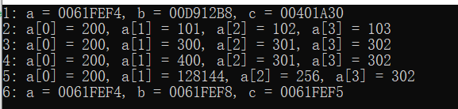
代码首先定义了四个变量，然后打印前三个变量的地址1
2
3
4
5int a[4];
int *b = malloc(16);
int *c;
int i;
printf("1: a = %p, b = %p, c = %p\n", a, b, c);
系统在分配地址的时候有其自己的算法，所以这三个地址我们是无法预估的
1 | c = a; |
第二部分将a的地址赋值给c，此时对c和a的操作都相当于对a的操作，所以打印a数组的时候会显示1
200 101 102 103
接下来第三部分1
2
3
4
5c[1] = 300;`
*(c + 2) = 301;`
3[c] = 302;`
printf("3: a[0] = %d, a[1] = %d, a[2] = %d, a[3] = %d\n",
a[0], a[1], a[2], a[3]);
这部分考察的是寻址方式，这部分可以参考csapp（深入理解计算机系统）的第三章121页，里面讲了寻址方式
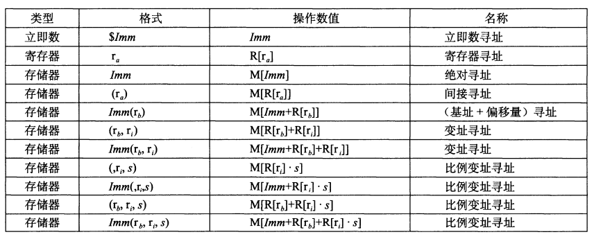
实际操作都是对于数据a的操作，所以打印出的内容为1
200 300 301 302
再接着：1
2
3
4c = c + 1;
*c = 400;
printf("4: a[0] = %d, a[1] = %d, a[2] = %d, a[3] = %d\n",
a[0], a[1], a[2], a[3]);
我们都知道，c是一个int *型的指针变量,所以执行c=c+1就相当于c的地址向后移位一个整型数字的大小，所以此时c所指向的地址为a[1]的地址，对c的操作就相当于对a[1]的操作，所以第四次打印较第三次来说只有a[1]的值发生了变化1
200 400 301 302
然后是第五次打印1
2
3
4c = (int *) ((char *) c + 1);
*c = 500;
printf("5: a[0] = %d, a[1] = %d, a[2] = %d, a[3] = %d\n",
a[0], a[1], a[2], a[3]);
这次非常特别的将c的地址转换成字符型加一然后又转换成整型，此时c指向的地址即不是a[1]又不是a[2]，而是a[1]和a[2]之间的位置，在这个时候写入500，那么肯定会导致a[1] a[2]的值都发生变化，如下图所示：
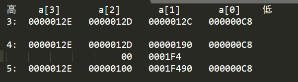
首先观察3和4，我们需要知道的是我们的编译环境是32位的，所以一个整数占32位，然后是该系统采用小端模式，高地址在前，低地址在后，所以我们在写入数据的时候也是从高地址写入低地址1
500用十六进制表示为：0x000001F4
c的地址原来指向a[1]，向后移位一个字符后则指向$a[1]+8bit大小，所以向C写入500时我们要将前8位写入a[2]的后8位，把500的后24位写入a[1]的前24位，如上图所示，所以写入后显示如下数字
：1
200 128144 256 302
最后一次打印，有了前面的介绍我们可以知道b的地址在a[0]的地址向后移位一个整型的大小，即32位，而c的位置为a[0]向后移位一个字符型的大小，8位。打印的内容如下所示：1
0061FEF4 0061FEF8 0061FEF5
其他具体的介绍也可以参考视频链接
MIT6.828 Lab1 Part3:The Kernel
Exercise7
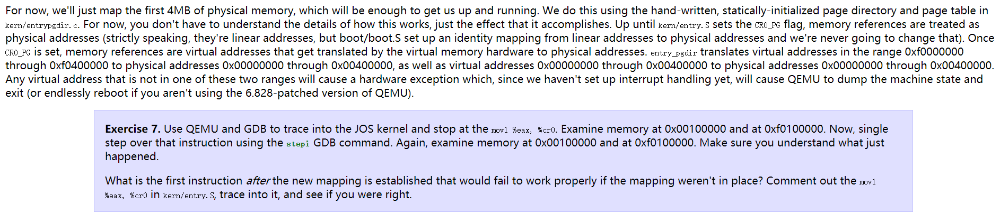
第一部分与虚拟内存映射有关联，主要表述的内容为：
- 我们的操作系统使用了4MB的物理内存
- 观察kern/entry.s文件可以得到，设置CR0_PG标志位之后就可以进行虚拟内存映射
- 具体的映射方式为高地址0xf0000000 - 0xf0400000的4MB物理地址映射到0x00000000 - 0x00400000，物理地址0x00000000~0x00400000依旧映射到0x00000000 - 0x00400000
要求我们验证CR0_PG标志位设置前后0x100000与0xf0100000两处物理地址存储的内容：
分析一下，根据我们的映射方式，0xf0100000与0x100000对应一个地址，所以在进行映射之前两者对应的内存不同，映射之后对应的内存相同
entry.s中有一句
movl %eax, %cr0
此句的作用就是设置CRO_PG，所以我们使用qemu和gdb定位到此句，查看执行前后两段内存中对应的内容即可
下面开始进行操作：
首先我们需要找到上面的代码，我们的代码在执行过bootmain之后跳转到entry函数的执行，所以我们只需要在bootmain的最后一行一句一句向后执行就能找到
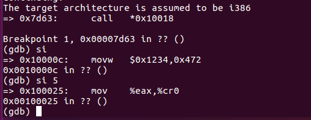
我们可以看到，该代码在0x00100025，此时是不能进行地址映射的，所以查看内存如下：
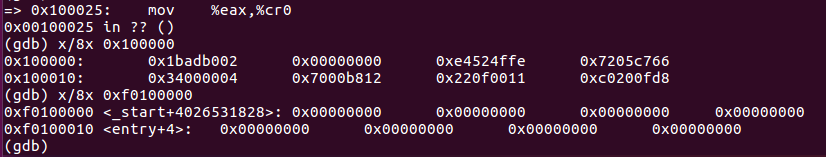
可以看到两个位置所存储的内容不同，使用si指令向下执行之后再次查看内存
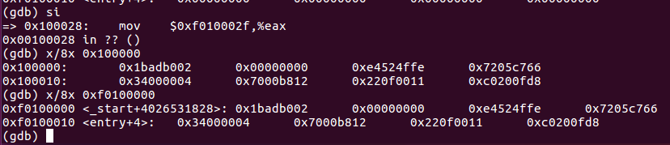
可以看到设置好CR0_PG之后确实可以进行地址映射
Exercise 8
Most people take functions like printf() for granted, sometimes even thinking of them as “primitives” of the C language. But in an OS kernel, we have to implement all I/O ourselves.
Read through kern/printf.c, lib/printfmt.c, and kern/console.c, and make sure you understand their relationship. It will become clear in later labs why printfmt.c is located in the separate lib directory.
首先我们要了解三个与打印相关的文件，分别为 \kern\printf.c，\kern\console.c, \lib\printfmt.c
简单了解里面的函数调用关系之后我们发现printf.c与printfmt.c都是调用了console.c文件中的函数，所以我们先来看console.c
这里我们主要关心的是被多次调用的cputchar函数
1 | // `High'-level console I/O. Used by readline and cprintf. |
通过注释我们可以发现，cputchar()函数是控制台IO最高层的控制程序，所以它被另外两个文件所调用。再有就是cons_putc()函数的作用是向控制台，也就是计算机屏幕输出一个字符
下面我们来具体看一下这三个函数：
1 | #define COM1 0x3F8 |
首先通过inb与outb函数我们可以知道这段程序是从一个端口读于一个字节的数据，然后写入另一个端口。
关于端口的内容我们可以查看这里
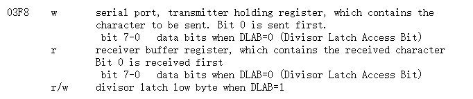
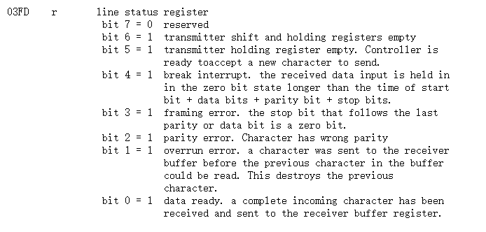
这里我们可以看到，我们从端口03FD读取字节，而该端口的bit5=1时说明此时这个寄存器为空，计算机可以向该寄存器发送数据，读取出的内容与0x20做与运算后再取反，此时就会退出循环，执行outb函数
接下来：1
2
3
4
5
6
7
8
9
10
11
12
13
14
15/***** Parallel port output code *****/
// For information on PC parallel port programming, see the class References
// page.
static void
lpt_putc(int c)
{
int i;
for (i = 0; !(inb(0x378+1) & 0x80) && i < 12800; i++)
delay();
outb(0x378+0, c);
outb(0x378+2, 0x08|0x04|0x01);
outb(0x378+2, 0x08);
}
这个函数的作用就是将字符输出给并口设备，至于为什么要做些操作，可能就是计算机设计者的问题了，本人并不清楚
0378-037A —— parallel printer port, same as 0278 and 03BC
0378 w data port
0379 r/w status port
037A r/w control port
可以看到，0x0379是状态端口，通过端口数据可以知道是否可以写入，然后0x0378写入数据，0x037A端口写入一些控制
最后一个cga_putc函数
1 | static void cga_putc(int c) |
首先，cga是我们的屏幕设备名称，put是输出的意思，c是我们函数里面一直使用的那个变量，所以函数的意思就是向屏幕输出c
但这里面的c并不是一个字符c，他是一个int型变量，占32位，每一位的作用如下所示：
| 15 14 13 12 | 11 10 9 8 | 7 6 5 4 3 2 1 |
|---|---|---|
| 背景色 | 前景色 | 字符 |
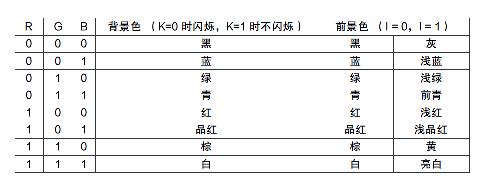
所以该函数前几句的意思就是:
1 | // if no attribute given, then use black on white |
如果c=0x0000,那么就将c转换为0x0700,二进制表示为0000 0111 0000 0000
说明显示背景为黑色，前景为白色，而字符0x00用ASCii码表示则为空，该函数的其余部分就是讨论c的类型以及不同的打印状态，这里我并没有仔细研究
看完console.c之后我们来看printfmt.c,这个函数的作用就是
Stripped-down primitive printf-style formatting routines,
used in common by printf, sprintf, fprintf, etc.
This code is also used by both the kernel and user programs.
然后是printf.c
Simple implementation of cprintf console output for the kernel,
based on printfmt() and the kernel console’s cputchar().
接下来则要求我们完善printfmt.c中关于八进制%o的代码
We have omitted a small fragment of code - the code necessary to print octal numbers using patterns of the form “%o”. Find and fill in this code fragment.
如下所示：
1 | // (unsigned) octal |
这里面主要是模仿十进制的代码进行编写即可，其中getuint函数
1 | // Get an unsigned int of various possible sizes from a varargs list, |
这个函数的作用就是获取一个不同长度的无符号数
再往下就是一些练习题，我们一个个看